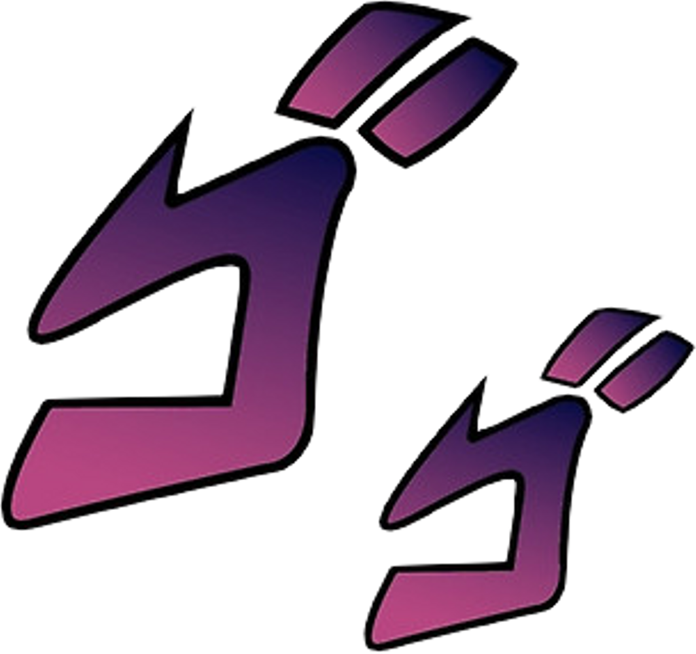
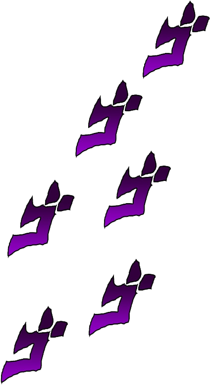

STAND USER
WISNU WIRA WINATA
"Mengubah ide menjadi baris kode, dan kode menjadi solusi digital yang bermakna!"
Saya adalah seorang mahasiswa program studi Ilmu Komputer di Universitas Lampung. Saya sangat tertarik mempelajari hal-hal baru terkait pemrograman, perkembangan teknologi, dan cara menciptakan solusi digital yang inovatif. Bagi saya, coding bukan sekadar mengetikkan rumus atau perintah ke dalam komputer, melainkan seni merangkai ide-ide kreatif menjadi sebuah karya nyata yang relevan dan bermanfaat bagi masyarakat luas.
HTML/CSSA
JAVASCRIPTB
GITHUBS
FIGMAB
JAVAC